Does GPT's 'decoder-only' architecture mean it consists of only a decoder?
GPT的decoder-only是只有decoder吗？
事情的起因是我和朋友争论GPT模型到底有没有encoder。他认为GPT或类似的模型其实有一个很小的encoder，并且encoder和decoder之间会有cross attention。而我的观点则是GPT只有decoder部分，没有encoder。
于是有了这篇论文考古。
GPT
论文链接：https://cdn.openai.com/research-covers/language-unsupervised/language\_understanding\_paper.pdf
GPT 1.0
GPT1.0分为训练和微调
训练
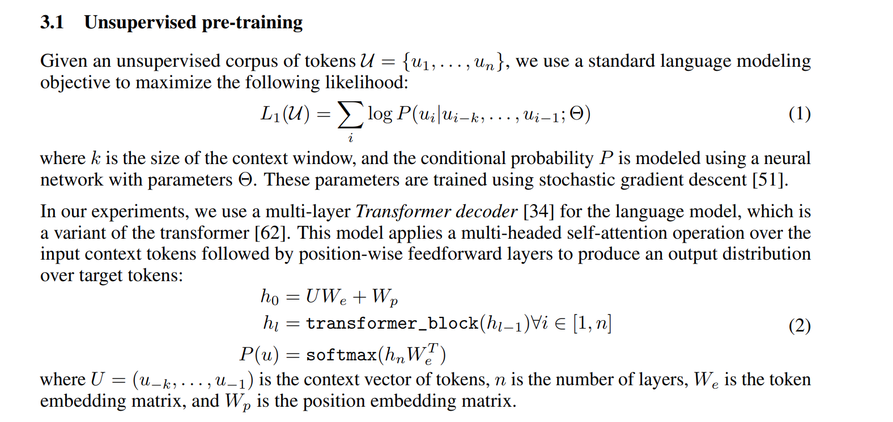
微调
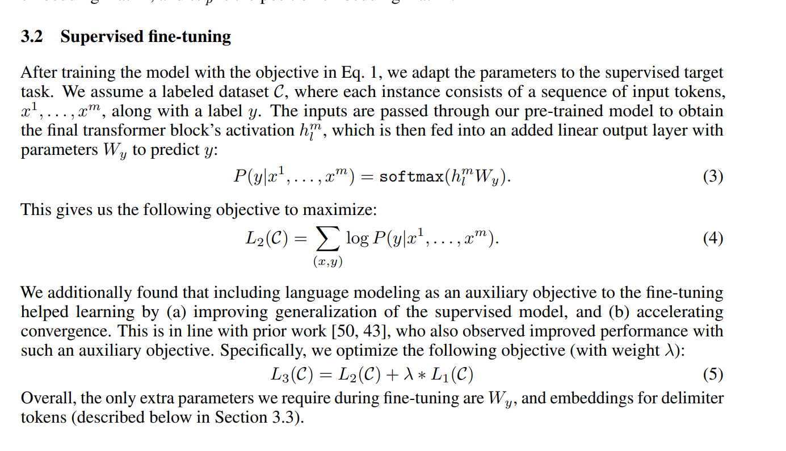
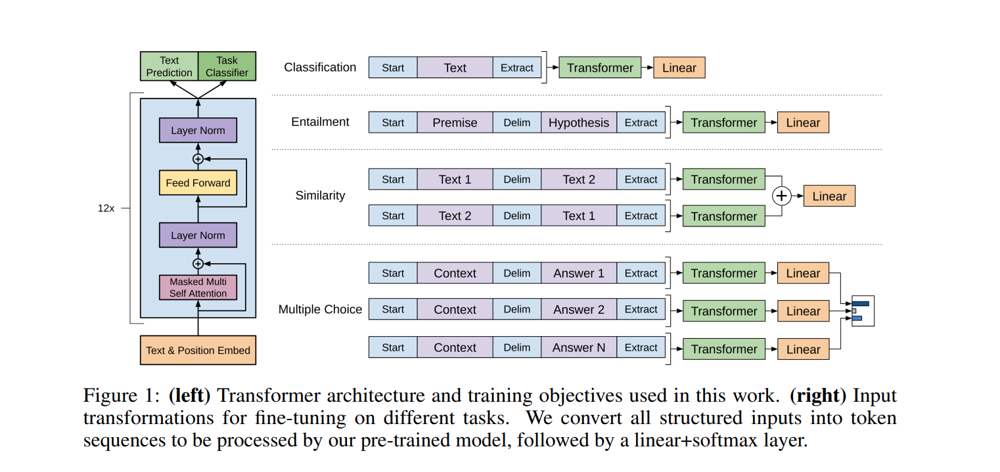
训练就是纯预测（优化一个目标函数），微调是同时做预测和分类（作者发现这样泛化性更好），优化目标为一组目标函数的和。
架构图可以到，就是只用了解码器，没有用编码器。
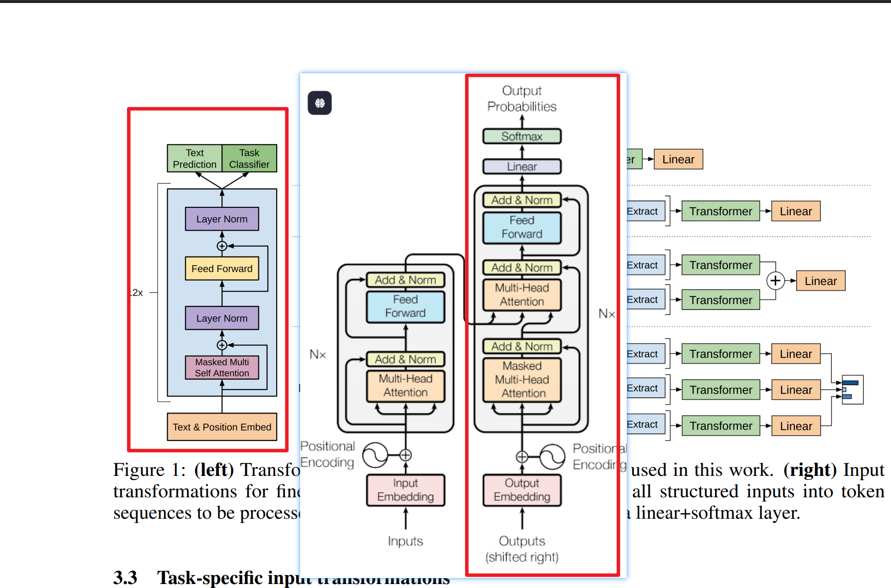
论文中谈及架构的时候提到了引用34和62。说他们使用的decoder是来自transformer的一个变体。
GENERATING WIKIPEDIA BY SUMMARIZING LONG
SEQUENCES
Attention is all you need.
34的文章提出了一个decoder-only的架构，用来生成像维基百科一样的文章，作者认为用decoder-only能够关注更长的序列，这比常见的在序列转换任务中使用的编码器—解码器架构所能处理的序列要长得多。在引言部分和模型示例图可以看到他们模型只包含deocder.
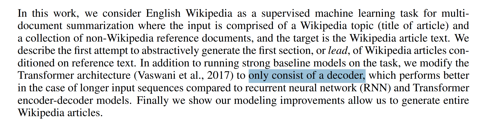
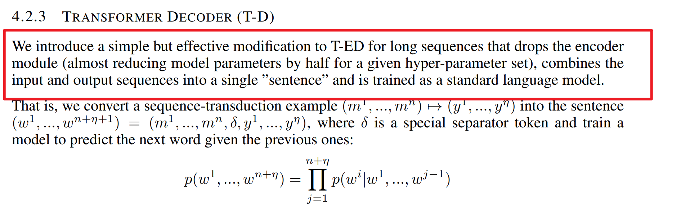
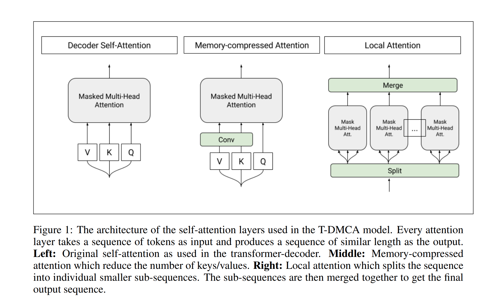
作者仅以不做了实验发现，比起encoder-decoder架构，decoder-only能微量提点，但是能处理的长度显著增加。
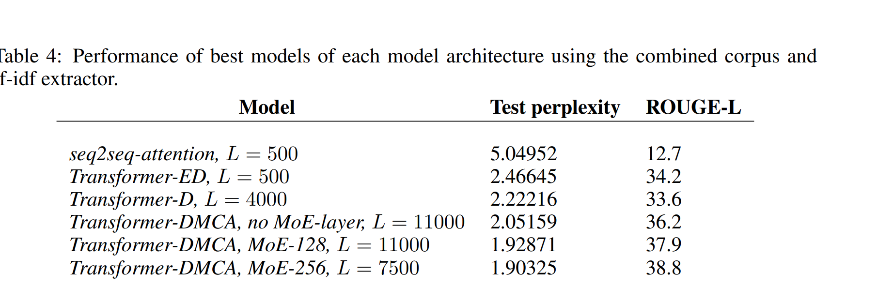
那么原来做cross attention那一层去哪里了？
在GPT1.0和它引用的论文里面是直接删掉了。只有masked multi-head
attention
GPT 2.0
那在GPT2.0, 3.0用了吗？
Language Models are Unsupervised Multitask Learners
GPT2.0在模型描述里面提到只在GPT1.0上做了微小改动，如果加了encoder应该属于模型大变化，应该会提到。
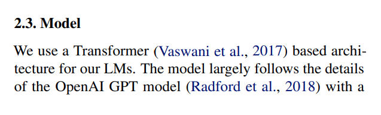
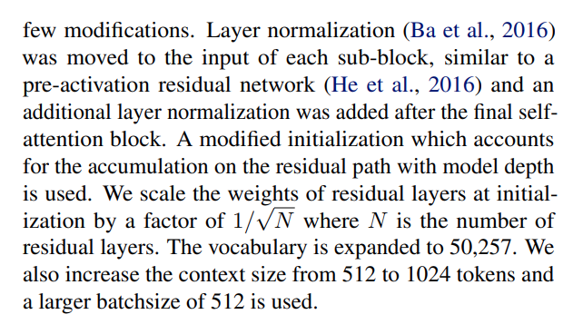
从源码里面看就是decoder-only
https://github.com/openai/gpt-2/blob/master/src/model.py
GPT 3.0
Language Models are Few-Shot Learners
https://arxiv.org/pdf/2005.14165
提到架构和GPT2.0一样
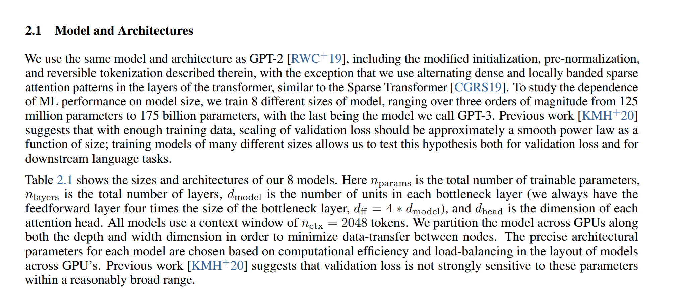
GPT 4.0
CloseAI的技术报告没有提模型细节，一种比较可靠的说法是他们要做多模态所以引入的ViT或者clip之类的技术理解媒体文件。但是这里我猜应该是只是做完embedding和文字的embedding一起输入，不能算是有"cross-attention"的encoder。
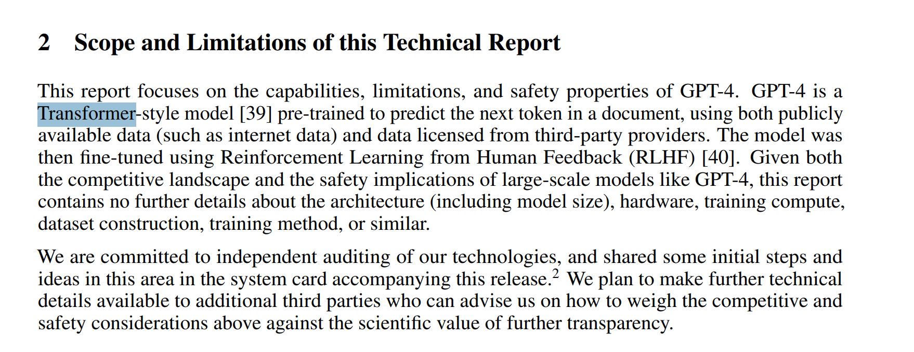
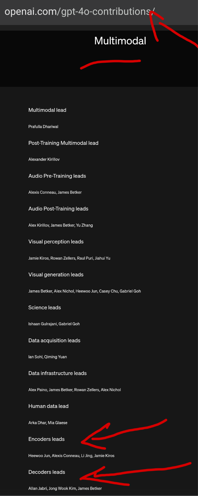
Decoder only有什么好处？
这里借用知乎这里的讨论
重新梳理一下。
注意力机制的数学特性（苏剑林观点）
**核心观点：**双向注意力容易退化为低秩，而因果注意力必然满秩。
详细解释与例子：
1 | 双向注意力示例 |
如果注意力矩阵变成低秩，相当于模型"眼里看到的东西都一样"，很多不同的位置/内容其实被糊成了一坨，没法细致地区分信息。
预测任务难度与泛化能力（@yili观点）
**核心观点：**更难的预测任务促使模型学习更好的通用表征。
具体例子：
预测"北京"这个词时：
Encoder-Decoder：可以看到完整句子"我爱[MASK]天安门"，从两边获取信息
Decoder-Only：只能看到"我爱"，必须从更少的信息中推断
这种"信息饥渴"迫使模型：
学习更强的语言模型能力
更好地理解词序和语法结构
形成更通用的表征
上下文学习的天然优势（@mimimumu观点）
**核心观点：**Decoder-only架构让prompt能直接作用于每一层。
Few-shot学习示例：
1 | 输入你给出的格式去掉多余斜线，改成： |
在Decoder-only中：
每个token的表示逐层构建时，都能直接参考前面的示例
Prompt信息像"隐式微调"一样影响每一层的计算
而Encoder-Decoder需要先编码完整输入，再解码，信息传递路径更长。
隐式位置编码特性
**核心观点：**因果注意力天然具有位置敏感性。
对比例子：
1 | 没有位置编码的双向注意力 |
KV-Cache复用机制
1 | 第一轮 |
Does GPT's 'decoder-only' architecture mean it consists of only a decoder?